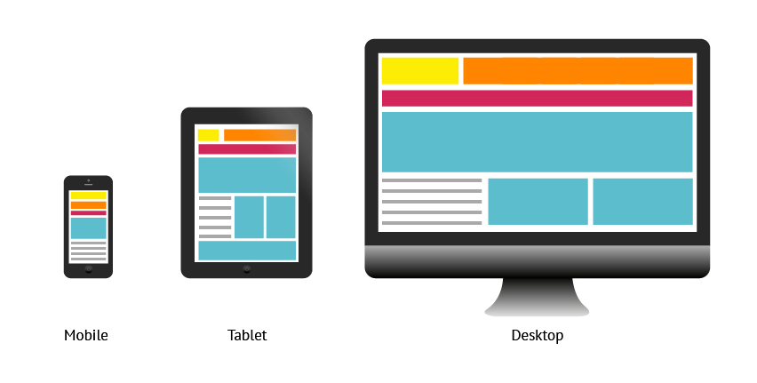
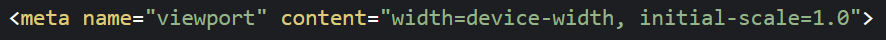
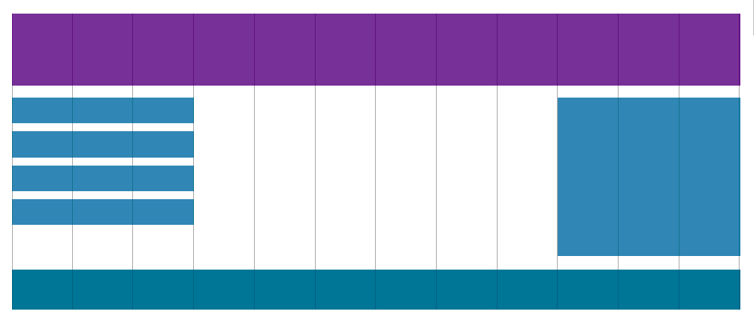
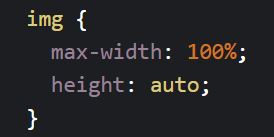
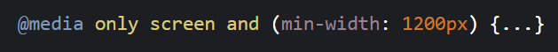
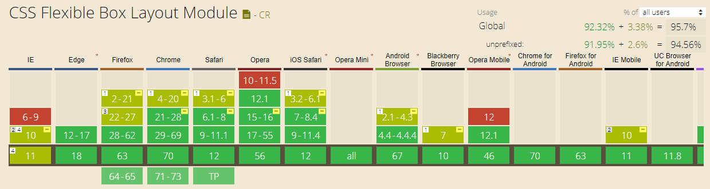
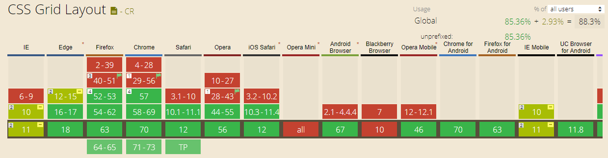
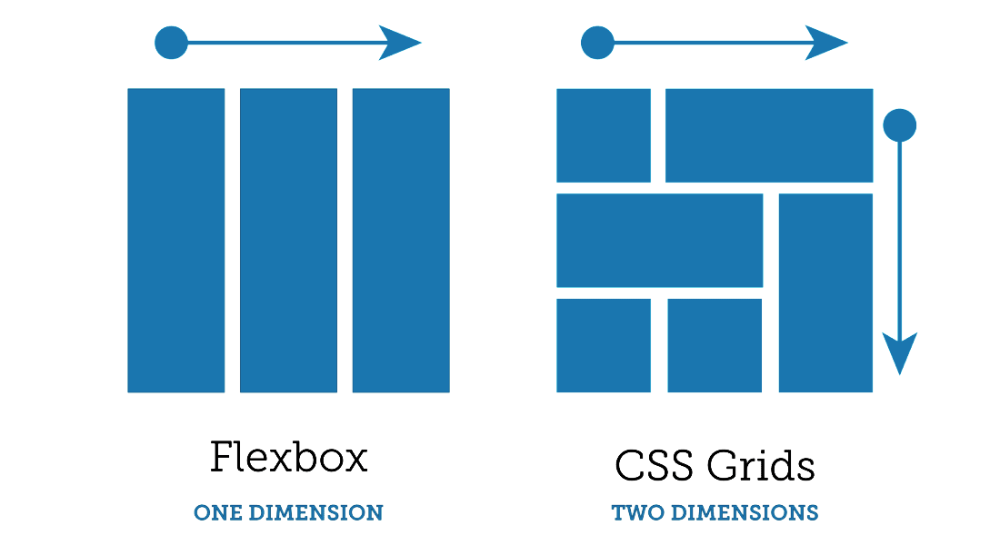

Responsive Web Design is about using HTML and CSS to automatically resize a website to make it look good on all devices (desktops, tablets and phones).
The “mobile first” approach tells us that the first step is designing the optimal view for mobile devices.
HTML5 introduced a method to let web designers take control over the viewport, through the tag.
A meta viewport element gives the browser instructions on how to control the page's dimensions and scaling.
The width=device-width part sets the width of the page to follow the screen-width of the device.
The initial-scale=1.0 part sets the initial zoom level when the page is first loaded by the browser.
It means that the page is divided into columns.
A responsive grid-view often has 12 columns, and has a total width of 100%, and will shrink and expand as you resize the browser window.
Responsive images are images that scale nicely to fit any browser size.
If the width property is set to a percentage and the height is set to "auto", the image will be responsive and scale up and down.
If the max-width property is set to 100%, the image will scale down if it has to, but never scale up to be larger than its original size.
Example:
The third ingredient of RWD is media queries. With media queries you can define completely different styles for different browser sizes.
Media query is a CSS technique introduced in CSS3.
It uses the @media rule to include a block of CSS properties only if a certain condition is true.
Example:
Flexbox layout is most appropriate to the components of an application, and small-scale layouts, while the Grid layout is intended for larger scale layouts.
The following tables provided by caniuse.com show the level of browser support for this features.
 Flexbox was designed for layout in one dimension: either a row or a column.
Grid was designed for two-dimensional layout: rows and columns at the same time.
The Flexible Box Layout Module makes easier to design flexible responsive layout structure without using float or positioning.
To start using the Flexbox model, you need to first define a flex container.
To create the flexbox container you just need to use:
The CSS Grid Layout Module offers a grid-based layout system, with rows and columns, making it easier to design web pages without having to use floats and positioning.
A Grid Layout consists of a parent element, with one or more child elements.
To create a grid you just need to use:
Named grid items can be referred to by the grid-template-areas property of the grid container. Each row is defined by apostrophes (' '). The columns in each row is defined inside the apostrophes, separated by a space.
fr (which stands for fraction) is a new value created for CSS grid.
grid-container: 1fr;
means, that one fraction of the available space will be used.
No.
They can work together: a grid item can be a flexbox container. A flex item can be a grid container.
But here's some things Grid is specifically better at than Flexbox:
Responsive Web design:
Flexbox:
Grid Layout:
and the other sources